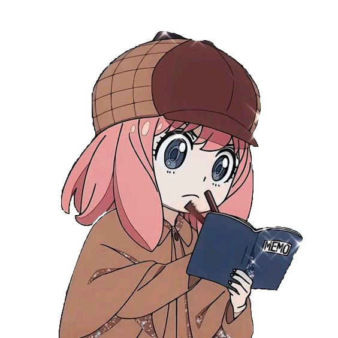
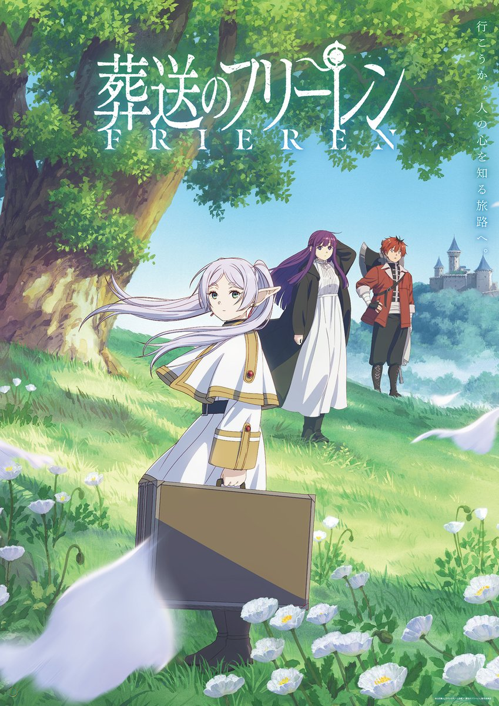
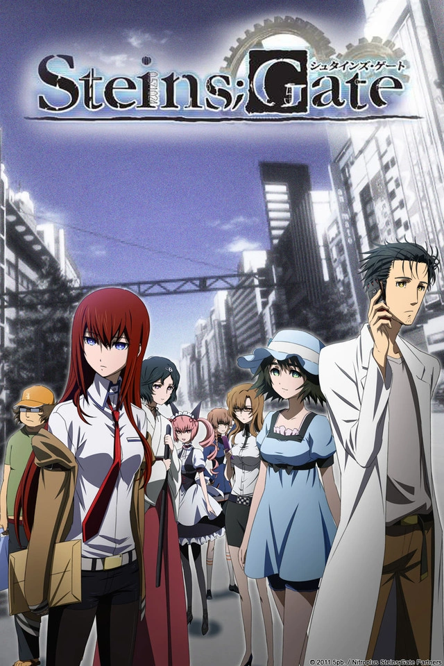
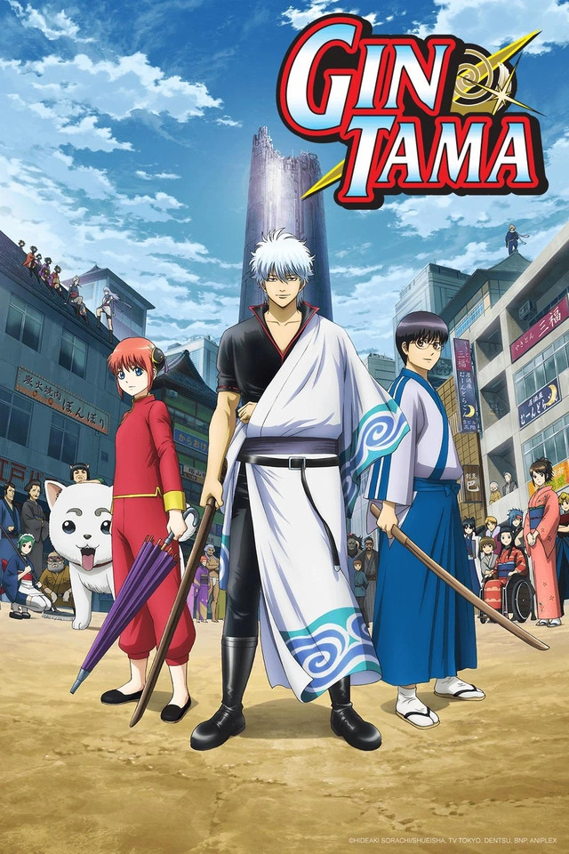
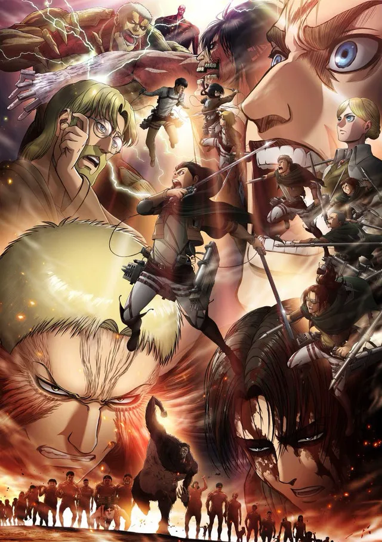

Anime IndicaConfira aqui quais animes estão com as melhores avaliações atualmente:

Sousou no Frieren (ou Frieren: Beyond Journey’s End) conta a história de Frieren, uma maga elfa que fez parte de um grupo de
heróis responsável por derrotar o Rei Demônio e salvar o mundo. Após essa grande conquista, seus companheiros humanos seguem
caminhos diferentes — e, com o passar dos anos, envelhecem e morrem, enquanto Frieren, por ser uma elfa de vida extremamente
longa, continua praticamente a mesma.
Décadas depois, ao reencontrar o passado e perceber o quanto pouco compreendia os sentimentos humanos, Frieren decide iniciar
uma nova jornada. Agora, seu objetivo não é apenas explorar o mundo, mas também entender melhor as emoções, as conexões e o
valor do tempo ao lado das pessoas.
Acompanhada por novos aliados, ela revive memórias antigas enquanto constrói novas experiências, em uma história melancólica,
reflexiva e profundamente humana sobre amizade, perda e o significado da vida.

Steel Ball Run é a sétima parte da série JoJo no Kimyou na Bouken, criada por Hirohiko Araki, e apresenta uma nova história
em um universo alternativo.
A trama se passa no final do século XIX e acompanha Johnny Joestar, um ex-jóquei prodígio que ficou paraplégico após um
acidente. Sua vida muda ao conhecer Gyro Zeppeli, um misterioso competidor que domina uma técnica especial chamada “Spin”.
Intrigado por esse poder — que parece ter relação com a recuperação de seus movimentos — Johnny decide participar da épica
corrida Steel Ball Run.
A competição é uma travessia de mais de 6 mil quilômetros pelos Estados Unidos, reunindo participantes do mundo inteiro em
busca de um grande prêmio. No entanto, a corrida logo se revela muito mais do que uma simples disputa: há segredos sombrios
envolvendo relíquias misteriosas espalhadas pelo percurso e interesses ocultos do próprio governo.
Ao longo da jornada, Johnny e Gyro enfrentam inimigos poderosos, muitos deles usuários de habilidades sobrenaturais
conhecidas como “Stands”, enquanto desenvolvem uma amizade marcada por crescimento pessoal, sacrifícios e escolhas difíceis.

Fullmetal Alchemist: Brotherhood é uma série de anime baseada no mangá de mesmo nome, criado por Hiromu Arakawa. A história
segue os irmãos Edward e Alphonse Elric, que vivem em um mundo onde a alquimia é uma ciência avançada. Após uma tentativa
desastrosa de ressuscitar sua mãe usando alquimia proibida, os irmãos pagam um preço alto: Edward perde um braço e uma perna,
enquanto Alphonse tem seu corpo completamente destruído e sua alma presa a uma armadura.
Determinados a recuperar seus corpos, os irmãos embarcam em uma jornada para encontrar a lendária Pedra Filosofal, que dizem
ter o poder de amplificar as habilidades alquímicas e permitir que eles revertam os danos causados pela transmutação falha.
Ao longo do caminho, eles enfrentam diversos desafios, incluindo confrontos com outros alquimistas, membros de uma organização
militar corrupta e criaturas perigosas. A série é conhecida por sua trama complexa, personagens bem desenvolvidos e temas
profundos sobre sacrifício, redenção e a natureza da humanidade.

Chainsaw Man Movie: Reze-hen adapta o arco da “Garota Bomba” da obra de Tatsuki Fujimoto, dando continuidade à história de
Denji, o jovem caçador de demônios que possui o poder de se transformar no temido Chainsaw Man.
Na trama, Denji conhece Reze, uma garota aparentemente doce e misteriosa que surge em sua vida de forma inesperada.
Encantado pela atenção e carinho que nunca teve, ele rapidamente se aproxima dela, vivendo momentos raros de tranquilidade e
afeto em meio à sua rotina violenta.
No entanto, esse encontro está longe de ser coincidência. Reze esconde uma identidade perigosa ligada a forças inimigas, e o
que começa como um romance leve logo se transforma em um conflito intenso e devastador.
Entre batalhas explosivas e revelações chocantes, Denji se vê dividido entre seus sentimentos e sua realidade como arma
humana, enquanto enfrenta uma das ameaças mais perigosas que já cruzaram seu caminho.

Steins;Gate acompanha Rintarou Okabe, um autoproclamado “cientista louco” que vive em Akihabara e lidera um pequeno
laboratório de invenções com seus amigos. Ao lado da brilhante (e cética) Kurisu Makise e do hacker Daru, ele acaba fazendo
uma descoberta acidental: uma forma de enviar mensagens para o passado usando um micro-ondas modificado.
Essas mensagens, chamadas de “D-Mails”, começam a alterar o curso dos acontecimentos, criando diferentes linhas do tempo. No
início, as mudanças parecem inofensivas — até que consequências inesperadas e perigosas começam a surgir, colocando em risco
a vida de pessoas próximas.
À medida que Okabe se aprofunda nesse fenômeno, ele se vê preso em um ciclo de tentativas e erros para evitar tragédias
inevitáveis, enfrentando o peso psicológico de suas escolhas e o impacto de brincar com o tempo.

Gintama: The Final é a conclusão épica da história de Gintama, reunindo ação intensa, comédia característica e momentos
profundamente emocionantes.
A trama acompanha Gintoki Sakata e seus companheiros do Yorozuya — Shinpachi Shimura e Kagura — em sua batalha final para
salvar a Terra de uma ameaça que coloca em risco toda a humanidade. O grande inimigo é Utsuro, uma entidade poderosa ligada
ao passado de Gintoki e ao destino do mundo.
Enquanto antigos aliados e rivais retornam para esse confronto decisivo, segredos são revelados e laços são testados ao
limite. A guerra final mistura confrontos grandiosos com despedidas emocionantes, dando encerramento às jornadas de diversos
personagens queridos.
Mesmo em meio ao caos, o filme mantém o estilo único da série, equilibrando humor absurdo com drama intenso, criando uma
despedida memorável para os fãs.

Gintama° (2015) é uma das fases mais marcantes de Gintama, equilibrando perfeitamente o humor caótico da série com arcos
dramáticos intensos e cheios de ação.
A história continua acompanhando o samurai preguiçoso Gintoki Sakata e seus companheiros do Yorozuya — Shinpachi Shimura e
Kagura — enquanto aceitam trabalhos aleatórios em uma Edo dominada por alienígenas. Entre situações absurdas, paródias e
momentos hilários, o trio segue se envolvendo em problemas cada vez mais imprevisíveis.
No entanto, essa temporada também marca uma grande virada no tom da série, com o início de arcos mais sérios, como o arco do
Assassinato do Shogun e os conflitos envolvendo organizações perigosas. Nessas histórias, o passado de vários personagens vem
à tona, revelando segredos e aprofundando suas motivações.
À medida que as ameaças aumentam, Gintoki e seus aliados precisam deixar de lado apenas a comédia e encarar batalhas que
colocam em risco não só suas vidas, mas o futuro de Edo.

Shingeki no Kyojin Season 3 Part 2 representa um dos momentos mais intensos e decisivos da série, focando na missão final
da Tropa de Exploração para retomar a Muralha Maria.
Liderados por Erwin Smith, os soldados enfrentam uma batalha desesperadora contra inimigos formidáveis, incluindo o Titã
Bestial e o Titã Colossal. Enquanto Levi Ackerman protagoniza confrontos brutais, Eren Yeager e seus aliados lutam para abrir
caminho até o porão de sua antiga casa — um lugar que guarda respostas fundamentais sobre o mundo em que vivem.
Ao longo dos episódios, sacrifícios extremos são feitos, colocando em jogo o futuro da humanidade dentro das muralhas. As
revelações finalmente trazidas à tona mudam completamente a compreensão dos personagens sobre sua realidade e o verdadeiro
inimigo.

Hunter x Hunter (2011) é uma série de anime baseada no mangá de mesmo nome, criado por Yoshihiro Togashi. A história segue
Gon Freecss, um jovem garoto que descobre que seu pai, que ele acreditava estar morto, é na verdade um renomado caçador —
indivíduos especializados em encontrar tesouros, explorar territórios desconhecidos e enfrentar criaturas perigosas.
Determinado a seguir os passos de seu pai e se tornar um caçador, Gon decide participar do rigoroso Exame de Caçadores.
Durante o processo, ele conhece outros candidatos, como Killua Zoldyck, Leorio Paradinight e Kurapika, cada um com suas próprias
motivações e habilidades únicas.
A série é conhecida por sua narrativa complexa, desenvolvimento profundo dos personagens e arcos emocionantes que exploram temas
como amizade, ambição e moralidade. Ao longo de sua jornada, Gon enfrenta desafios cada vez maiores, desde lutas contra outros
caçadores até confrontos com organizações criminosas e criaturas sobrenaturais.

Ginga Eiyuu Densetsu (Legend of the Galactic Heroes) é uma épica ópera espacial que retrata um conflito político e militar
de grandes proporções entre dois sistemas rivais: o Império Galáctico, uma monarquia autoritária, e a Aliança dos Planetas
Livres, uma democracia em decadência.
A história acompanha dois gênios estratégicos em lados opostos da guerra: Reinhard von Lohengramm, um jovem ambicioso que
busca conquistar o poder e reformar o Império, e Yang Wen-li, um historiador relutante que se torna um dos maiores
comandantes da Aliança.
Ao longo da narrativa, batalhas espaciais grandiosas se entrelaçam com intrigas políticas, debates ideológicos e decisões
que afetam milhões de vidas. Diferente de histórias tradicionais de ação, o anime foca profundamente nas consequências da
guerra, na natureza do poder e nas falhas tanto da autocracia quanto da democracia.